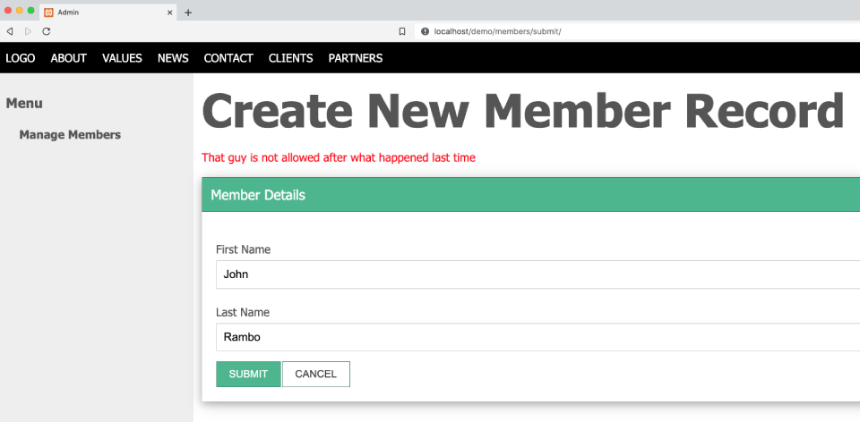

There may be situations where you'd like to produce form validation checks that are not a part of Trongate's validation helper. This is where custom form validation callbacks become important. Here's a video, demonstrating everything you need to know about this topic:
[youtube]{
"headline": "Video Tutorial",
"info": "In this video I'm going to demonstrate how to create your own custom form validation callbacks",
"videoId":"wNH_UHqhcKs"}
[/youtube]
Let's assume that you're using Trongate's form validation helper to perform some form validation checks. A key part of that process is invoking Trongate's in-built set_rules() method to declare what validation rules should be applied to particular form fields. For example, the two lines of code below checks for posted 'first_name' and 'last_name' values. In order for form validation to be passed, both values must be:
$this->validation_helper->set_rules("first_name", "first name", "required|min_length[2]|max_length[255]");
$this->validation_helper->set_rules("last_name", "last name", "required|min_length[2]|max_length[255]");The validation tests that are created from the code above all invoke tests that are built into the Trongate framework.
That's all well and good - but what if you have some unique test of your own that you'd like to add? An example of a unique validation test is:
"John Rambo is not allowed to become a member"
Nowhere in the documentation for the validation helper will you see a test for something like that! So, for that kind of situation we'd have to create our own custom validation check. For simplicity, we'll start by freeing up some space with our 'last name' validation rules declaration. All we're doing here is removing some code so that our example has a hope of fitting onto the page!:
$this->validation_helper->set_rules("first_name", "first name", "required|min_length[2]|max_length[255]");
$this->validation_helper->set_rules("last_name", "last name", "required");So, now our 'last_name' field is just required.
ADDING YOUR OWN VALIDATION TEST
Now, we're going to call upon our own custom validation test then we'll create a method for carrying out our validation test.
To declare your own custom validation test, go to the set_rules() declaration and add in a rule that begins with:
callback_Now, immediately after those characters add on the name of a method that you're going to have run your custom validation checks.
For example, if you'd like to create a method called 'check_name' (to perform your own custom validation tests), you would say:
$this->validation_helper->set_rules("first_name", "first name", "required|min_length[2]|max_length[255]");
$this->validation_helper->set_rules("last_name", "last name", "required|callback_name_check");With your custom validation rule(s) declared, you can now go ahead and create a method for running your own custom form validation tests.
PLEASE NOTE: Custom validation methods will automatically receive the value from the target posted form field as an argument. So, we may assume that our method will always receive a string. In this case, it will be a string equal to the posted 'last_name'. It's therefore normal practice to for custom validation callbacks to have the following general structure:
function whatever_check($str) {
//run some tests
}In our case, we know that our validation callback will receive a posted last name variable as an argument. Since the end goal of our validation callback is to return either true (as a boolean) or an error message (as a string), we could say:
function name_check($last_name) {
//return either true or return an error message
}Now that we have the basic structure of a validation callback in place, it's now for you to add your own validation rules and an accompanying error message inside the custom validation method.
For example, here's a validation method that enforces the rule that a username with a first name of 'John' and a last name of 'Rambo' is not allowed to be added to the 'members' table:
function name_check($last_name) {
//returns true or an error message. That"s it!
$first_name = post("first_name", true);
if (($first_name == "John") && ($last_name == "Rambo")) {
$error_msg = "That guy is not allowed after what happened last time";
return $error_msg;
} else {
return true;
}
}So, if an end user tries to create a member record with a first name of 'John' and a last name of 'Rambo' then a custom validation error message will appear on the screen, like so:
